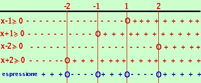

|
risolviamo la disequazione: x4 - 5x2 +4 Considero il polinomio associato x4 - 5x2 +4 = devo scomporlo in fattori; sono 3 termini, se faccio la sostituzione x2 = y ottengo x2 - 5x +4 = questo posso scomporlo come trinomio notevole x2 - 5x +4 = (y - 1)(y - 4) ora rimetto x2 al posto di y x4 - 5x2 +4 = (x2 - 1)(x2 - 4) Ora devo decidere se voglio fare la disequazione con fattori di secondo grado oppure solo con fattori di primo grado scomponendo anche gli ultimi fattori tra parentesi. Un metodo vale l'altro: noi utilizzeremo fin dove possibile fattori di primo grado Dentro parentesi sono due termini e precisamente la differenza fra due quadrati cioe' x2 - 1 =(x - 1)(x + 1) x2 - 4 =(x - 2)(x + 2) e quindi avro': x4 - 5x2+ 4 = (x - 1)(x + 1)(x - 2)(x + 2) > 0 poniamo ogni fattore maggiore di zero
 Adesso riporto i risultati su un grafico indicando indicando con un un + dove ogni disequazione e' positiva e con un - dove e' negativa e con un cerchietto i punti dove il fattore vale zero ed e' accettabile e faccio il conto dei segni: devo prendere gli intervalli dove il prodotto dei segni dei fattori (cioe' il segno dell'espressione) risulta negativo o nullo. Ottengo come risultato: -2 |